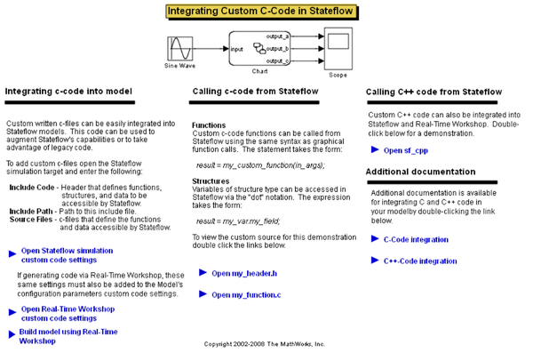
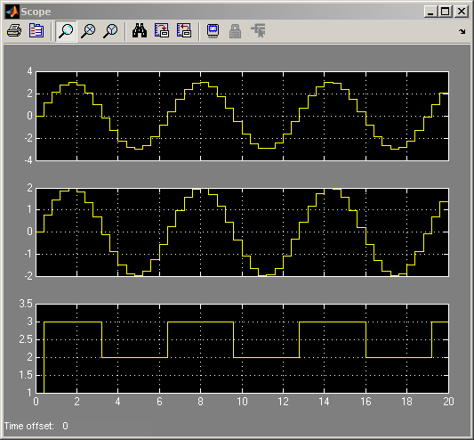

カスタム C コード関数と構造体のインクルード
Stateflow® は、記述されたカスタム C コード関数を組み込んで呼び出すことができます。
このデモでは、my_function.c で定義されている C コード関数と my_header.h で定義されている構造体をチャートにインクルードします。MY_FUNCTION は単純にその入力を 2 で乗算します。my_header.h 内の構造は、次のように定義されます。
typedef struct { real_T a; int8_T b[10]; } MyStruct;
モデルでは、ドット表記 MyStruct.a を使用して構造体メンバーにアクセスし、ポインター gMyStructPointerVar ->b[1] も使用します。
 